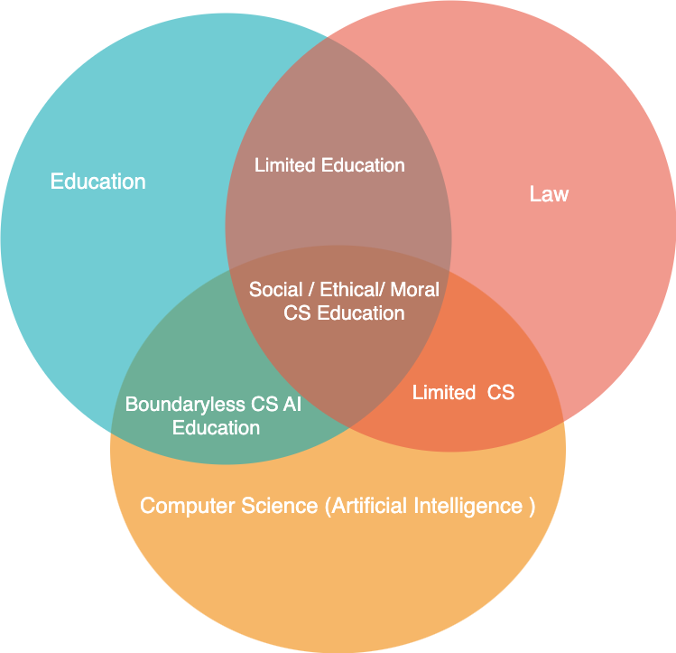

Further Research:
Curriculum for Computer Science

Computer Science Curriculum

Are Open data Policy and Process the biggest hurdle for the development of third world countries? Why do some countries have less innovations despite the several universities and PHD candidates? How Data helps to know the blur areas in terms of society development?
AI Era as the "Dark Age" of Human civilization. How an education institute should equip students with required knowledge and skills to identify either fake or original data, information, knowledge?
AI can make a person 's emotions survive even after their physical body death. If a person uses some personal assistance AI/ Robot, then AI gains knowledge, adapts and improves over time like a human being that matches with their personality. AI uses previous data, knowledge and makes decisions and predicts. How do these personal assistants AI affect society and families even after a person's death?
How Law affects the Education domain in Computer Science
How Law affects the school education
how law should be - Open to Innovation Drives
how Law restricts the AI technologies innovations?
The picture shows the relationship between Education, Law and Computer Science Artificial Intelligence
Why does the future education need to focus on the Consciousness level of human beings? How Spirituality helps to achieve Consciousness level?
How Computer Science technologies can be used for Spirituality and ethical education?
Note: Spirituality is always to find Truth. Mindfulness is the act of being focussed about the present moment without Judging. Just to See but no Judgement. Mindfulness is the core component for Spirituality. Religion may be biased towards subjects and have political influence. However Spirituality is never baised, always treated equal to all living beings and seeks truth for the purpose of life. Life can be in any form like human beings, dogs, cats etc...
Education is one of the most powerful green weapon tools through which you can construct or deconstruct society. If education is used as a tool then it can act like a silent poison to deceive and discourse in a society. The discourse brings a new course structure order in a society.
The purpose of education is to know about yourself and seek truth. Being educated is not to accumulate wealth, power, fame but to identify yourself differently and seek truth that leads to bliss.
Education is aligned with ethical and nature values, and abides with nature rules.
Politics is a way to Balance subjects (Words, statements ...) or to compare between subjects.
Power is the external force generated from Politics. Education tools are commonly used for politics or power.
Every society has a certain Power Structure. THere is no society as Free Society.
Research is studying and searching again data, information and knowledge to refine perceived knowledge through systematic study in an evidence way.
Philosophy is a lens and perception to view and perceive any subject / problem by having a certain prejudiced belief and value system. Philosophers set a different path, courses with certain principles and values embedded in their life journey. Each one of us is a philosopher having a different philosophy of life.
Philosophy is the beginning stage for any education and subject disciplines guided by core principles and values. Philosophy is at the "Root level of Education" and human civilization that discourses society.
Theory is the repetition of any identified subject. Model is the proven solution to the problem.